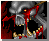

Ogre Mages
Ogre Mages
Eye of Kilrogg: You can use this spell to look on enemy forces but it only last for a certain amount of time and can only see so far
Bloodlust: This is one of the most useful Orc spells. This will make a unit attack with more strength. It's counter-spell is slow. Be sure to use this spell if you have it!!
Runes: This is a blinking red trap can be laid for the enemy. It will cause a lot of damage to anyone who passes over it
Death Knights
Death Coil: Drain the health of your opponent by using this spell. Taking away half of the enemy's health points will add that amount to your Death Knight's health
Haste: Using this spell is an advantage over your enemy. This will allow a unit to speed up in anything that unit does. (I don't know about building buildings)
Unholy Armor: With only taking away half of the health your unit will be invinsible to any attack for a short time. This does not work with Sappers/Demo Squads
Death and Decay: This is used just like Blizzard. Use it to kill a large enemy force or towers and buildings
Whirlwind: A whirlwind that is uncontrolable once it is cast will travel around an area wounding or destroying anything in it's path. This lasts a while
 Raise Dead: Bring units back from the dead and have them under your control. Even your opponent's dead body can be restored under your command. They become skeletons with little health and strength and over time their health goes down and they die